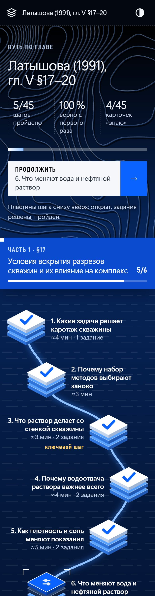
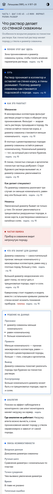
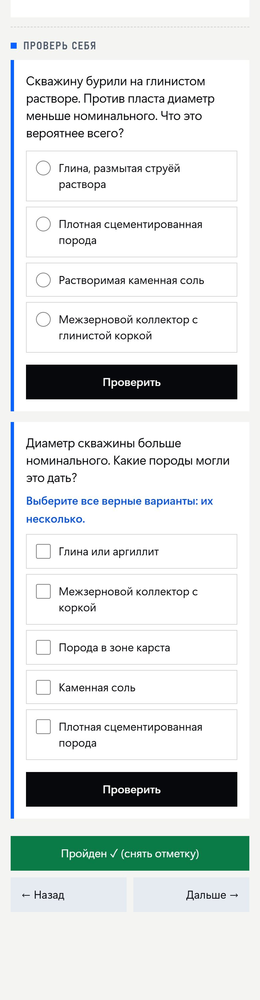

Проверенный курс для новичка: у каждого утверждения дословная цитата и страница книги.
Факт правим в одном месте. Курс, задания и ролик пересобираются сами.
цитаты, числа, смысл, чужие пакеты
шортс и разбор, паспорт каждого кадра
графика кодом из параметров сцены
пять типов, расчёты пересчитывает программа
утверждения с цитатой и страницей
единиц: абзацы, формулы, таблицы, задачи
Единица текста либо в узле, либо в списке с честной причиной. Нет причины — сборка останавливается.
цитата сверена знак в знак со страницей
неверный вариант противоречит строке главы
правил ТЗ при сборке трёх курсов
Три двойника другой школы и языка и глава по бурению. Слой, маршрутизация и курс собраны замороженным конвейером.
Механизм, практика, нюансы, «стр. N» у абзаца
Что это значит для данных и где модель ошибётся
Задания, карточки, конспект, карта связей



Генеративного видео нет. Поменялись параметры сцены — петля пересчитывается.
У каждой фразы — утверждение слоя. У каждого кадра — класс, параметры и чек-лист физики.
Замечание проходит, только если есть строка главы, которой элемент противоречит: страница, цитата, исправление.
Счёт программой организаторов: 90 % с учётом тяжести. Набор открыт для самопроверки; на тесте пакет другой. В нашем английском пакете подсказку получили все 8 подложенных ошибок.
Репетиция 25.11: контрольная глава, 62 единицы, 22 узла, 18 заданий, 14 анимаций. Штрихом — рендер в фоне.
мест помечено «сверить со сканом». Где распознавание сомнительно, конвейер не угадывает. Примерно в трети ответ виден из самой главы.
рисунков книги перерисованы неточно. Точная оцифровка ждёт сканов.
модель работает в сессии Claude Code, без ключа API. Промпты и ответы лежат в репозитории, модель заменяема.
Любая правка человека попадает в журнал с минутами и причиной.